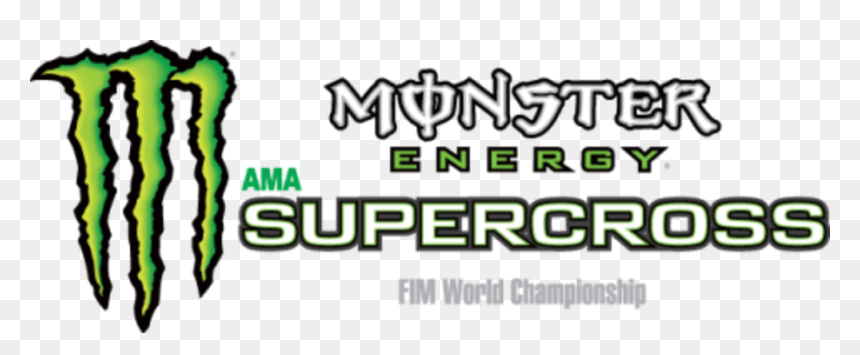
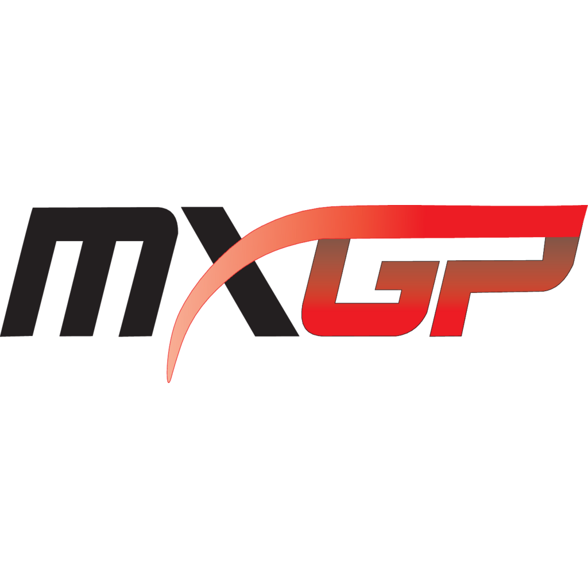
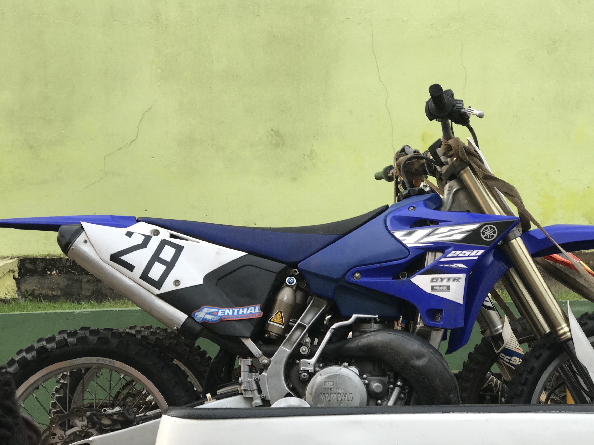
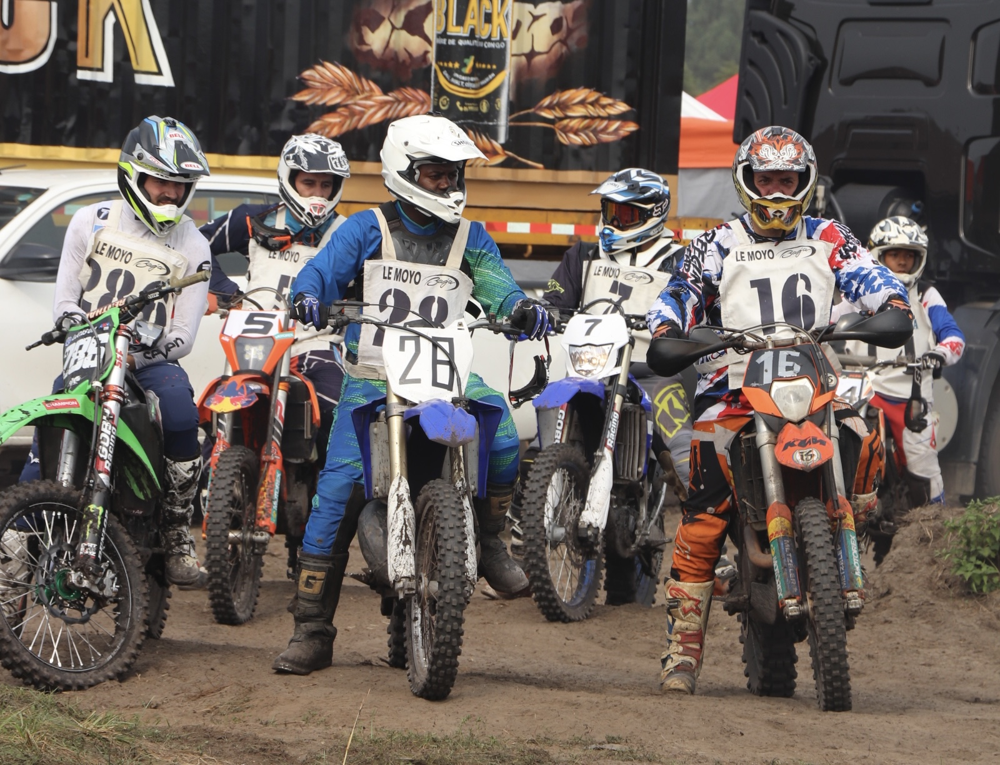

Le motocross🧡, c'est une sport extrême qui se pratique sur pistes "tout-terrain" avec des motos adaptées à ses pistes.
Il existe 3 grandes competitions qui reunissent tous les plus grands pilotes du monde:
LE SX TOUR:SX TOUR

LE MONSTER ENERGY SUPERCROS!!🤟🏽🔥:MONSTERR ENERGY SUPERCROSS

LE MXGPMXGP

Ma petite bête❤️‍🔥, un YAMAHA YZ 250cm3 modele 2016
J'ai eu l'occasion de participer à ma premiere Course nationale categorie Senior(20 ans à +)

Ma premiere course où j'ai malheuresement terminé 8e/50
Cédric Soubeyras👑 à réussi à se hisser sur le podium en sortant vainqueur de l'une des plus grandes competition de motocross, le fameux SX TOUR!!!!